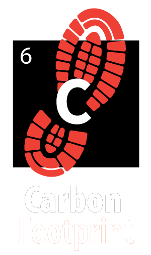

<div class="lightbulb">
  <div class="container-fluid">
    <div class="row">

      <div class=col-4>
        
      </div>

      <div class="col-4 ts">
        <a class="links" style="color: white;" href="">Our Story</a>
      </div>

      <div class="col-4 ts">
        <a class="links" href="/about">Our Clients</a>
      </div>
    </div>

    <div class="row">
      <div class="col-6 ">
        <p class="copy">Carbon Footprint was founded in 2009. While riding a camel during a trip to the Indianapolis
          Zoo, ‘Atom’ Kern took a leap of faith and decided to start developing websites, focusing specifically on
          plants. He immediately hired 3 master coders/designers.</p>

        <p class="copy">One could say that we have an even larger Carbon Footprint in 2019 with 15 employees and
          over 3000 active clients.<br><br></p>

        <h3 class="subs">Some of our clients</h3>
        <ul>
          <li class="copy">LeafMeAlone.com - A tree removal service that helps owners remove trees that produce
            oxygen so we can have more carbon in the air.</li>
          <li class="copy">ScissorsCutGrass.com - a lawn mowing company that cuts grass with scissors only.</li>
        </ul>
      </div>
    </div>

  </div>
</div>
